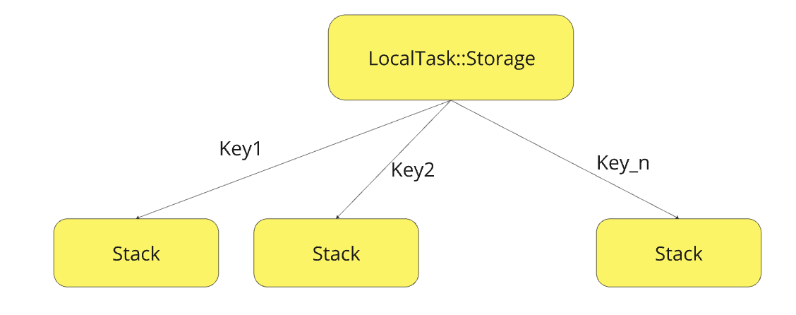

1. Task Local
Продолжая изучать Task можно задаться следующим вопросом, если дочерние задачи умеют наследовать контекст родительской задачи, то где хранится вся эта информация и можно ли помимо служебных полей передать ещё какие-нибудь свои метаданные - ответ ДА, можно.
Теперь возникает ещё больше вопросов:
- Где эти данные лежат?
- Как они уничтожаются?
- А что вообще можно передавать между задачами?
- Как это вообще устроено? Данные передаваясь между дочерними задачами копируются или хранятся где-то на куче?
- А безопасно ли это?
Давайте пройдём по порядку и выясним как это работает и ответим на наши вопросы
Введение¶
Опишем поверхностно как это работает и приведём пример:
- Каждая задача (Task) в Swift имеет свой собственный контекст, который может содержать локальные данные.
- Эти данные хранятся в виде словаря
- Данные доступны только в пределах текущей задачи и её дочерних задач, созданных с использованием
async let,TaskGroupили других механизмов создания дочерних задач
import Foundation
@TaskLocal static var requestID: String?
func performRequest() async {
print("Request ID: \(requestID ?? "unknown")")
}
func main() async {
await $requestID.withValue("12345") {
await performRequest() // Выведет "Request ID: 12345"
}
await performRequest() // Выведет "Request ID: unknown"
}
Task {
await main()
}
Что можно заметить?
- @TaskLocal - проперти врапер, которых позволяет шарить данные между дочерними задачами + ещё и переменная статичная
- await $requestId.withValue(..) - необычные вызов и передача параметров. То есть всё, что будет находиться внутри блока withValue будет всегда при обращении к requestId выдавать идетификатор заданный изначально
Не углубляясь в детали можно сказать, что задачи могут переносить с собой некоторые метаданные и мы можем добавлять свои параметры и шарить их на всю иерархию задач (от родительской до дочерней). Task Local Values можно считывать из любой функции, выполняемой в контексте задачи. Это относится к синхронным функциям, которые были вызваны из асинхронной функции.
@TaskLocal под 'капотом'¶
Какие типы могут быть помечены @TaskLocal?¶
Любые Sendable типы - это гарантирует, что тип безопасен для использования в многопоточной среде.
- Ссылочные типы:
Если @TaskLocal применяется к ссылочным типам (например, классам), то во время выполнения задачи счетчик ссылок на объект увеличивается. Это предотвращает удаление объекта, пока задача или её дочерние задачи используют его. После завершения задачи счетчик ссылок уменьшается. Cтоит обратить внимание на то, что изменение task-local значения в дочерней задаче влияет на родительскую, т.к. это ссылка
- Типы значений:
Если @TaskLocal применяется к типам значений (например, структурам), то они копируются в дочернюю задачу. Это значит, что каждая задача получает свою копию значения, что предотвращает проблемы, связанные с изменением данных из разных задач. Cтоит обратить внимание на то, что изменение task-local значения в дочерней задаче не влияет на родительскую, что согласуется с копированием значений
Реализация¶
Теперь интересно как это происходит на уровне C++ кода. Как мы внутри одной задачи можем создавать несколько TaskLocal и они не будут мешать друг другу или как создание TaskLocal в дочерних не перезатирает значения из родительских задач?
Шаг 1. Вызов withValue¶
public func withValue<R>(_ valueDuringOperation: Value,
operation: () async throws -> R,
file: String = #fileID,
line: UInt = #line) rethrows -> R {
/// Необходимое значение пушится в Storage
_taskLocalValuePush(key: key, value: valueDuringOperation)
/// После выполнения кода в operation происходит удаление значения из хранилища
defer { _taskLocalValuePop() }
return try await operation()
}
Шаг 2. C++ имлементация¶
На самом деле реализация данного функционала достаточно проста.
- Для каждого ключа - свой стек значений
- Общее хранилище (Storage) - коллекция стеков (не единый стек).
Глобально это выглядит следующим образом:

1) LocalTask::Storage - использует хеш-таблицу (или inline-буфер), где каждый ключ связан со своим стеком. В коде выглядит так:
class Storage {
// Inline-буфер для быстрого доступа (первые 4 ключа)
BufferEntry inlineBuffer[4];
// Хеш-таблица для остальных ключей
llvm::DenseMap<const void *, Stack> map;
};
2) Stack — это стек значений для конкретного ключа.
push(key, value): Добавляет значение в стек дляkey.pop(key): Удаляет вершину стека дляkey.get(key): Возвращает вершину стека дляkey(или значение по умолчанию).
Давайте разберём на примере как происходит работа механизма TaskLocal.
@TaskLocal static var userID: String = "anonymous"
@TaskLocal static var debugMode: Bool = false
Task {
// Уровень 1
$userID.withValue("alex") {
// Уровень 2
$debugMode.withValue(true) {
// Уровень 3
$userID.withValue("admin") {
print(userID) // "admin"
print(debugMode) // true
}
}
}
}
| Уровень | Состояние Storage | Описание |
|---|---|---|
| Уровень 0 | userId -> [] debugMode -> [] |
Глобальное дефолтное состояние. В этот момент по каждому ключу происходит дефолтное присвоение значений ключам. Это важно, т.к. в дальнейшем эти значения будут использоваться, в случае если какой-то стек окажется пустым |
| Уровень 1 | userId -> [alex] debugMode -> [] |
Storage текущей задачи создается как копия глобального. Когда мы попали в $userId.withValue("alex"), инициализируется стек по ключу userId и в него закладывается первое значение alexСтек по ключу debugMode остаётся пустым |
| Уровень 2 | userId -> [alex] debugMode -> [true] |
Когда мы попали $debugMode.withValue("true")инициалзируется стек по ключу debugMode и в него закладывается первое значение true |
| Уровень 3 | userId -> [alex, admin] debugMode -> [true] |
Когда мы попали в $userId.withValue("admin"), в стек по ключу userId добавляется новое значение adminСтек по ключу debugMode остаётся таким же |
| Выход из уровня 3 |
userId -> [alex] debugMode -> [true] |
Удаляется вершина стека @userID ("admin").Стек @userID возвращается к "alex" |
| Выход из уровня 2 |
userId -> [alex] debugMode -> [] |
Удаляется вершина стека @debugMode trueСтек @debugMode возвращается к пустому состоянию. Это означает, что будет использоваться значение по умолчанию для стека по ключу debugMode |
| Выход из уровня 1 |
userId -> [] debugMode -> [] |
Удаляется вершина стека @userID ("alex").Стек @userId возращается к исходному состояниюЕсли стек пуст - используется дефолтное значение из глобального стореджа, установленное в уровне 0 |
Теперь мы понимаем как происходит работа внутри со стеком и хранилищем. Но мы не ответили на один вопрос
Как наследуются значения в дочерних задачах?¶
Здесь на самом деле всё достаточно просто. Когда создается дочерняя задача, она копирует текущие вершины стеков всех ключей из родительской задачи.
Task {
$userID.withValue("alex") {
Task { // Дочерняя задача
print(userID) // "alex" (копия вершины стека родителя)
$userID.withValue("bob") { ... } // Не влияет на родителя
}
}
}
Вот теперь мы точно понимаем общий смысл работы TaskLocal. Конечно там есть различные оптимизации, но это уже относится к деталям реализации.
Где же использовать TaskLocal?¶
Контекст выполнения: TaskLocal отлично подходит для передачи небольших, неизменяемых данных, которые могут влиять на выполнение задачи. Например, это может быть информация о текущем пользователе, идентификатор запроса или параметры конфигурации.
-
Логирование и трассировка: Вы можете использовать TaskLocal для передачи информации, которая будет использоваться в логировании или трассировке выполнения задач. Это может включать в себя контекстные метки или идентификаторы, которые помогают отслеживать выполнение задач в сложных системах.
-
Настройки и конфигурация: Если у вас есть настройки, которые должны применяться ко всем операциям в рамках задачи, TaskLocal может быть удобным способом их передачи.
Task.isCancelled, Task.currentPriority¶
После того как мы изучили работу TaskLocal, мы сразу можем сделать вывод, что флаги isCancelled и currentPriority устроены точно таким же образом, НО НЕТ - это неправда.
ДАННЫЕ ФЛАГИ мы можем использовать гораздо чаще и каждый раз проходить выше описанный алгоритм не хочется, поэтому для ДАННЫХ ФЛАГОВ СДЕЛАЛИ ОПТИМИЗАЦИЮ и они работают не через TaskLocal. Как именно мы рассмотрим в следующих статьях.
Заключение¶
TaskLocal в Swift — это полезный инструмент для управления контекстом выполнения задач, особенно когда нужно передать небольшие и неизменяемые данные, которые должны быть доступны в рамках задачи и её дочерних задач. Однако, его использование требует осторожности. Он не подходит для передачи больших объемов данных или объектов с изменяемым состоянием, так как это может привести к значительным накладным расходам и проблемам с согласованностью данных. Для таких случаев лучше использовать другие методы передачи данных, такие как явные параметры функций или альтернативные механизмы управления состоянием. В целом, TaskLocal следует применять там, где он действительно приносит пользу, например, для передачи контекстной информации, необходимой для логирования или настройки выполнения задач.